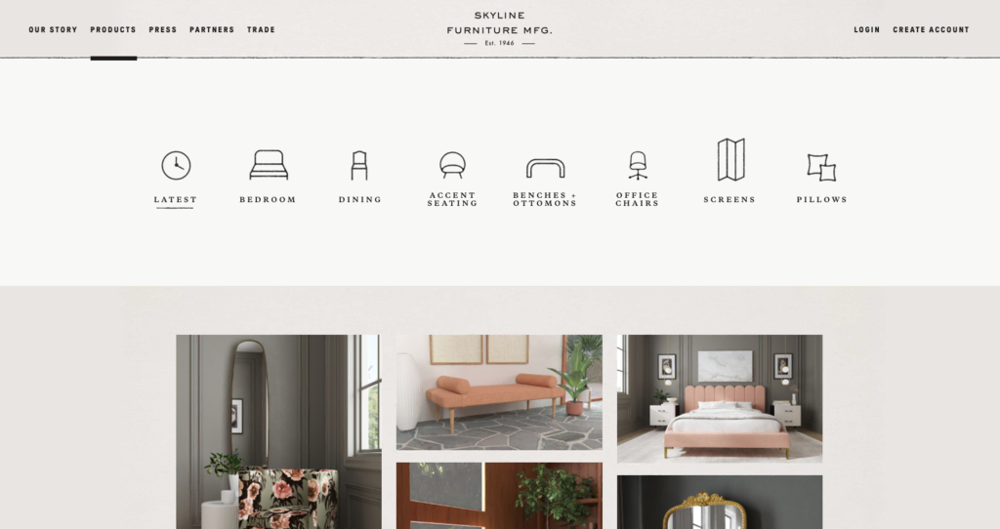

Glossário jan 31, 2024 Bruno S. 8min de leitura
O Que é Site? Entendendo seus Componentes e Categorias
Um site é uma das ferramentas mais importantes que empresas ou indivíduos podem usar para nutrir suas presenças digitais. Seja uma pequena empresa, uma grande corporação ou um freelancer, criar um site é uma maneira altamente eficaz de se tornar mais visível na internet.
Neste artigo, vamos entender o que eles são, para que serve um site e entender seu funcionamento, analisando seus componentes, tipos e categorias.
Conteúdo
O Que é Site?
Um site é um lugar na internet onde você pode guardar informações para que outras pessoas vejam. Isso pode incluir informações sobre você, seu negócio ou até mesmo tópicos do seu interesse. Com base na categoria do site, as pessoas também podem usá-los para fazer compras, conversar, estudar e se divertir.
Como um Site Funciona?
Todo site é identificado por um endereço único, que informa aos navegadores onde ele está localizado.
Basicamente falando, quando você insere um endereço da web no seu navegador, ele vai para o local especificado e mostra a página desejada. O processo de transmissão dessas informações é realizado por tecnologias como o Protocolo HTTP e o Protocolo de Transferência de Arquivos (FTP), que essencialmente definem como as informações e arquivos são transmitidos pela web.
O navegador então exibe na sua tela a página da web usando tecnologias como HyperText Markup Language (HTML) e Cascading Style Sheet (CSS). Essas tecnologias estruturam e apresentam as informações da página da web ao visitante, dizendo ao navegador exatamente onde colocar o quê na tela.
Felizmente, você não precisa ter conhecimento em linguagens de programação ou dominar essas tecnologias para criar um site. Na verdade, você pode transformar sua ideia de site em um site totalmente funcional em questão de minutos usando um criador de sites, por exemplo.
Por exemplo, o Criador de Sites da Hostinger permite que você crie um site com IA. Você só precisa digitar algumas frases, como o nome da sua marca e a descrição do seu site, e a ferramenta gerará um site pronto em poucos minutos. Em seguida, basta usar o editor de arrastar e soltar, que permite editar intuitivamente todos os elementos do site ao seu gosto.
Quais São os Componentes de um Site?
Conhecer os elementos essenciais de um site ajudará você a entender melhor a tecnologia por trás deles. Além disso, saber mais esses componentes é crucial quando se trata de criar seu próprio site, ajudando você a economizar tempo e dinheiro.
1. Hospedagem de Sites
Se quisermos definir o que é hospedagem de site, basicamente estamos falando de um servidor que fornece aos proprietários de sites a infraestrutura de que precisam para armazenar, manter e publicar seus sites na internet. Em outras palavras, seu site e seus arquivos devem ser armazenados fisicamente em um computador de alta potência, chamado servidor web, para que possam ser acessados por outras pessoas na internet.
Além da infraestrutura, a maioria dos provedores de hospedagem de site também lida com todos os aspectos técnicos da manutenção das páginas, como a implementação de medidas de segurança e gerenciamento dos servidores web. Com isso, eles garantem que as pessoas possam visitar seu site sem nenhum problema.
Os planos de hospedagem existem em diversas modalidades e categorias, como servidor VPS, host Cloud e muito mais. Confira nosso tutorial para saber qual o plano de hospedagem certo para você.
Para facilitar o gerenciamento do seu site, os planos de hospedagem de site da Hostinger vêm com um painel de controle personalizado, inovador e fácil de usar, que chamamos de hPanel. Você poderá verificar seus recursos, gerenciar backups, controlar contas de e-mail, fazer upload de arquivos e muito mais – tudo a partir de um único painel de controle.
2. Domínio
Um domínio é o endereço eletrônico de um site, que os visitantes usam para acessá-lo na web. Um domínio marcante ajuda os visitantes a lembrarem do seu site com mais facilidade. Portanto, selecionar o nome certo é importante para a jornada de construção do seu site. Na Hostinger, o registro de domínio é fácil e rápido, e quase todos os nossos planos incluem domínio gratuito por um ano.
[FORMULÁRIO]3. URL
Um URL (uniform resource locator) é o endereço eletrônico de qualquer elemento na internet. Este elemento pode ser uma página da web, uma imagem, um vídeo ou até mesmo um documento. Normalmente, uma URL é composta por diferentes partes, incluindo um protocolo, um domínio, uma extensão e um caminho.
Por exemplo, a URL deste artigo é:
4. Design
Um design de site focado no apelo visual e no bom funcionamento pode encorajar os visitantes a explorar mais e visitar novamente suas páginas. E vamos além: de acordo com pesquisas, mais de 80% dos visitantes julgam a credibilidade de um negócio com base no design do seu site.
Ou seja, se dedicar a um bom design para o seu site é o aspecto mais importante a se considerar quando você estiver planejando sua presença online. Felizmente, existem muitas maneiras de projetar seu site sem fazer grandes investimentos. Uma opção é usar templates feitos por designers profissionais no seu criador de sites.
Recomendamos que você dê uma olhada no Awwwards para se inspirar em designs de sites. A plataforma apresenta vários sites premiados e as melhores práticas de web design.

5. Conteúdo
O conteúdo é a informação que você coloca em seu site para informar, direcionar ou influenciar os visitantes. Essas informações chegam ao público por meio de texto, imagens, vídeos ou gravações de áudio.
Assim como o design, sua principal responsabilidade é manter os visitantes engajados, garantindo visitas mais longas e repetidas ao seu site. Como o conteúdo também forma a base da otimização para mecanismos de busca na página (SEO), criar artigos otimizados pode melhorar sua posição nas páginas de resultados dos mecanismos de busca (SERPs).
Se você não tem a experiência e os recursos necessários para projetar seu site e criar conteúdo otimizado, utilize as ferramentas de IA incluídas no nosso criador de sites. Além dos mais de 150 templates prontos para uso, oferecemos a ferramenta de escritor IA, que te ajuda a gerar conteúdo amigável para SEO mais rapidamente.
Quais São os Diferentes Tipos de Sites?
A maioria dos sites pode ser classificada em dois tipos gerais: estáticos e dinâmicos. O propósito do seu projeto ajudará você a determinar que tipo de site ele deve ser.
Para entender melhor a diferença entre os dois, vamos explicar o que significa quando um site é estático ou dinâmico.
Estático
Um site estático é bastante direto em termos de design e funcionalidade, geralmente servindo a um propósito simples. O conteúdo e a aparência de sites estáticos permanecem os mesmos para todos os visitantes, independentemente de seus navegadores, localizações ou dispositivos.
Páginas web estáticas não oferecem interações profundas com os visitantes, mas ainda podem conter animações e elementos clicáveis, como hiperlinks ou botões de navegação. Isso torna o formato estático uma escolha popular para sites de portfólio e catálogo.
A página Skyline Furniture MFG é um exemplo ideal de um site estático. Ele usa páginas estáticas feitas a partir de HTML básico para exibir texto, imagens e links de navegação que levam você a outras páginas.
Dinâmico
Um site dinâmico pode alterar seu conteúdo e aparência com base em vários fatores, incluindo a hora do dia, localização do visitante, preferências de idioma e interações anteriores com o site.
Isso torna o tipo de site dinâmico mais adequado para negócios de comércio eletrônico, mídias sociais, reserva de ingressos e fóruns.
O site da Amazon é um exemplo popular de um site dinâmico. Sua página inicial mostra recomendações de produtos para os visitantes com base em suas localizações, compras e histórico de pesquisa.
Um site também pode ser uma combinação de páginas web estáticas e dinâmicas. Tais sites normalmente têm páginas de informações fixas e estáticas, como “Sobre” e “Contato”, com outras páginas — como o catálogo de produtos, feed de notícias e página principal — sendo dinâmicas.